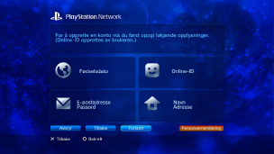

PlayStation™Network > Registrere
Registrere
For å bruke denne funksjonen, må du oppdatere systemprogramvaren.
PSNSM er en online tjeneste som brukes for shopping på nettet som du kan finne ved å gå til  (PlayStation®Store). Du kan også bli med på chat under
(PlayStation®Store). Du kan også bli med på chat under  (Venner) eller bruke forskjellige online tjenester fra PSNSM. For å bruke PSNSM, må du ha en Sony Entertainment Network-konto. For å opprette en konto, velg
(Venner) eller bruke forskjellige online tjenester fra PSNSM. For å bruke PSNSM, må du ha en Sony Entertainment Network-konto. For å opprette en konto, velg  (Opprett en konto) under
(Opprett en konto) under  (PlayStation™Network), og følg deretter anvisningene på skjermen.
(PlayStation™Network), og følg deretter anvisningene på skjermen.

Hovedelementer som kreves for å opprette en konto
| Personlig informasjon | Skriv inn informasjon om den registrerte brukeren, inkludert dag, måned og fødselsår, og brukerens navn og adresse. |
|---|---|
| Hovedkonto / Bikonto | Det finnes to typer kontoer: Hovedkontoer og bikontoer. Brukere med en hovedkonto kan endre visse brukerforhold på tilknyttede bikontoer. Hovedkonto: Standardkontoen kan opprettes av en registrert bruker som er av en spesifisert alder eller eldre. Brukere med en hovedkonto kan endre visse brukerforhold på tilknyttede bikontoer. Bikonto: Brukere som ikke oppfyller kravene for en hovedkonto i sin region, kan bare bruke en bikonto. Eiere av Bikonto-kontoer kan ikke opprette lommebøker, men de kan bruke lommebok (wallet) til den tilknyttede Hovedkonto til å betale for produkter og tjenester. En bikonto kan ikke opprettes hvis det ikke finnes en tilknyttet hovedkonto. Kravene som må oppfylles for hovedkontoer og bikontoer, varierer avhengig av landet eller regionen du befinner deg i. For mer informasjon, besøk SIE-nettstedet for din region. |
| Logg-på ID (e-postadresse) | Meld inn en ID som du skal bruke når du logger på PSNSM. Bruk en gyldig e-postadresse som du kan bruke til å motta bekreftelses-eposter med, for eksempel når du kjøper noe i (PlayStation®Store). |
| Passord |
Opprett et passord etter retningslinjene nedenfor:
|
| Online-ID |
Meld inn et navn som skal vises for alle, i PSNSM. Du kan ikke endre online-ID etter at den er opprettet. Opprett online-ID i henhold til følgende:
|
Tips
- Gå til dette nettstedet for å opprette en underkonto:
https://www.playstation.com/acct/family - Avhengig av alderen til en mindreårig skal PCen opprette en Sub account. Under opprettelsen av kontoen sendes det en e-post til e-postadressen som er tilknyttet innehaveren av Master accounts påloggings-ID. Følg anvisningene i e-posten for å fylle ut registreringen på en PC.
- For å logge deg inn på PSNSM ved hjelp av en Sub account som ble opprettet må du knytte kontoen til en bruker som kommer til å logge seg inn på PS3™-systemet. Se [Bruke en eksisterende konto] under (PlayStation™Network) i denne veiledningen.
- Påloggings-IDen (e-postadresse) og passordet vil ikke bli vist for alle. Pass på at du ikke deler denne informasjonen med andre.
- Du kan opprette bare én konto per bruker på PS3™-systemet. Gå til
 (Brukere), og opprett flere brukere hvis du vil opprette flere kontoer.
(Brukere), og opprett flere brukere hvis du vil opprette flere kontoer. - Du finner informasjon om håndtering av personlig informasjon for brukere på SIE-nettstedet for din region.
- Du må ha en bredbåndsforbindelse for å få tilgang til PSNSM. Vær oppmerksom på at det ikke er støtte for ekstern pålogging.
- PSNSM er kun tilgjengelige i enkelte regioner og språk. For mer informasjon, kontakt teknisk kundestøtte for landet ditt.
- (Opprett en konto) vises kun hvis en konto ikke har blitt opprettet.